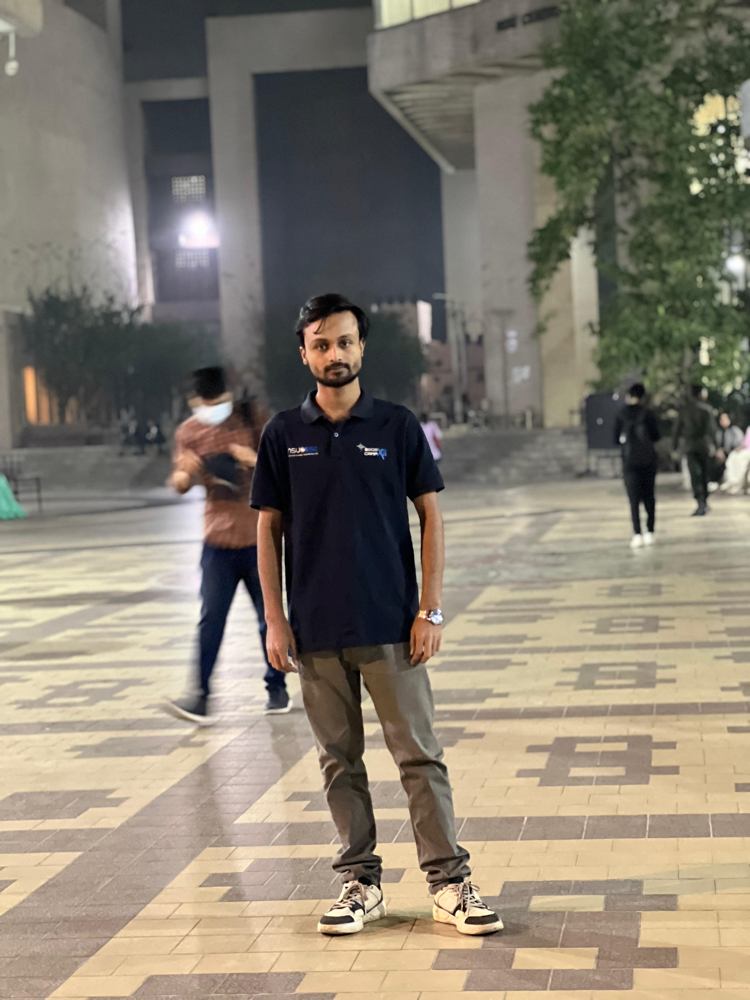

A Computer Science and Engineering student with a strong passion for software development, artificial intelligence, machine learning, and emerging technologies. I enjoy solving real-world problems by building innovative, efficient, and user-focused solutions. My technical expertise includes Python, C++, C, PHP, SQL, HTML, CSS, JavaScript, Bootstrap, and MySQL. I also work with modern AI and data science frameworks such as PyTorch, Pandas, NumPy, Scikit-learn, LangChain, FastAPI, and Streamlit to develop intelligent applications and machine learning systems. Beyond academics, I have experience working on AI-powered applications, full-stack web development, database systems, and computer vision projects. My interests include deep learning, natural language processing, quantum computing, cybersecurity, and building practical AI solutions that create real impact. In addition to programming, I work as a professional graphic designer, combining creativity with technology to produce visually appealing digital experiences. I believe that great software should be both functional and beautifully designed. I am a continuous learner who enjoys exploring new technologies, contributing to challenging projects, and improving my skills every day. My goal is to build innovative software and AI-driven solutions that make a meaningful difference. When I'm not coding, you'll usually find me learning about the latest technology trends, experimenting with new tools, or working on personal projects that help expand my knowledge and experience.
